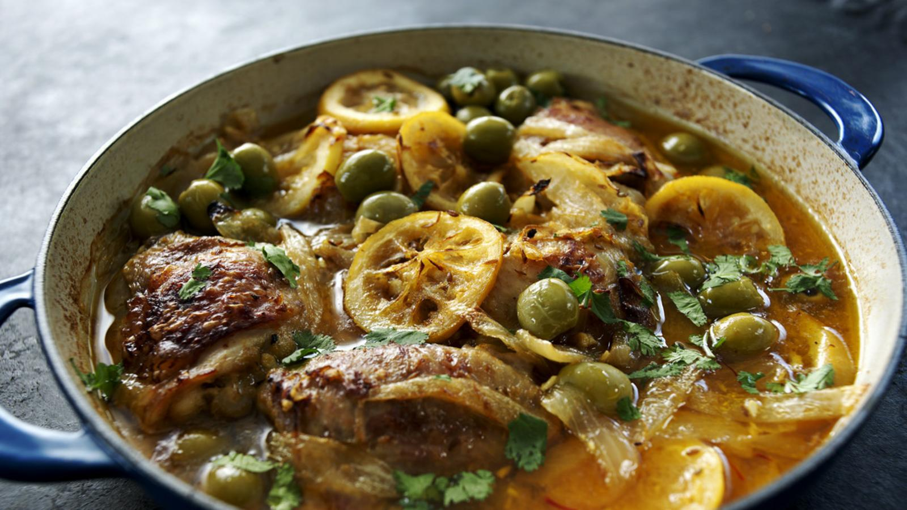

Moroccan Lemon Chicken

A hearty favourite
Serves 2-3
Ingredients
For the spice paste
- 2-3 garlic cloves, roughly chopped
- pinch of salt
- 2-3 pinches of smoked paprika
- 2-3 pinches of turmeric
- 1 tsp cumin seeds
- glug of olive oil
For the lemon chicken
- 6 chicken thighs
- glug of olive
- 2 onions, roughly chopped
- 1 lemon, halved then thinly sliced
- pinch saffron strands
- handful ofgreen olives
- handful of fresh coriander, roughly chopped
Method
- For the spice paste, crush the garlic cloves and sea salt with a pestle in a mortar. Add the smoked paprika, turmeric and cumin seeds and grind to a paste. Add just enough olive or groundnut oil to make the paste runny enough to pour, but thick enough to coat the chicken.
- For the casserole, place the chicken thighs into a bowl, pour the spice paste over them and toss well to coat all of the meat. Cover with cling film and leave to marinate in the fridge for as long as time allows, overnight if possible.
- Heat the olive oil in a large shallow pan, then cook the onions until softened. Add the chicken thighs and cook until coloured lightly on both sides. Add the lemon slices and pour in enough water to come halfway up the chicken pieces. Stir in the saffron, then season well, cover with a lid and simmer for about 25 minutes, until the chicken is cooked through and tender. Add the olives and fresh coriander and serve.